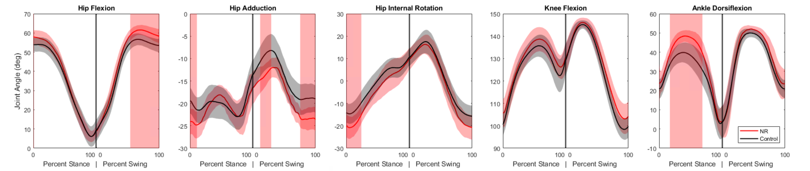
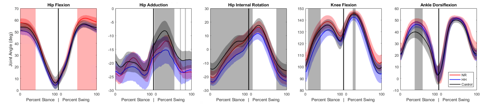
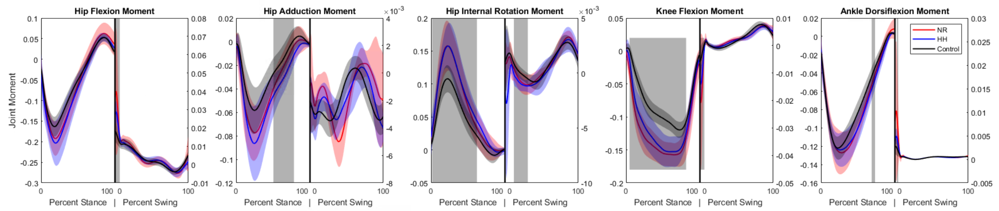
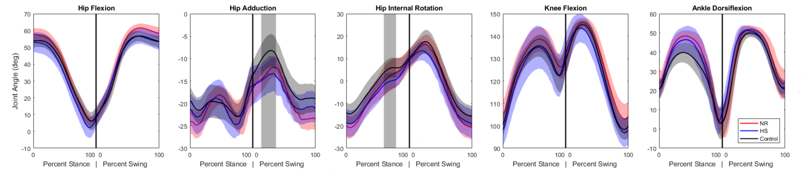
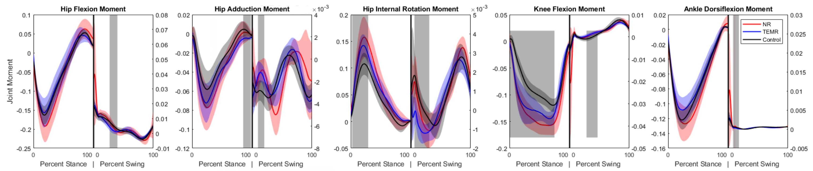

![]()
1 Abstract
Volumetric muscle loss (VML) is a debilitating injury involving removal of skeletal muscle and resulting in permanent functional deficits. This injury is often seen in military personnel from combat wounds and in civilian populations from traumatic accidents. While significant preclinical research is underway, direct comparisons of emerging therapies are rare. This study provides a comprehensive biomechanical comparison of multiple treatment strategies for VML in a rat model. A 20% by-mass VML defect was created in the lateral gastrocnemius (LG) of 48 female Lewis rats, which were divided into six groups (n=8 each): No Repair (NR), Tissue-Engineered Muscle Repair (TEMR), Healy Hydrogel (HH), Healy Sponge (HS), and combination therapies of TEMR with the hydrogel (TEMR+HH) or a keratin gel (TEMR+KG). After 24 weeks, we assessed functional recovery using motion capture and force plates to determine spatiotemporal parameters, joint kinematics, and joint kinetics via OpenSim-based inverse dynamics. While no treatment restored full function completely in line with the uninjured controls, some groups demonstrated improvements, showing trends toward normalized ankle kinematics and reduced compensatory kinetic patterns. Others highlighted different gait patterns that compensated for a functional loss about the ankle. These findings highlight the utility of detailed biomechanical analysis in differentiating treatment efficacy for musculoskeletal disorders and provide insight into avenues that may better restore functional outcomes.
2 Introduction
Volumetric muscle loss (VML), the traumatic or surgical removal of skeletal muscle beyond the point of natural regeneration, results in severe, permanent functional impairment groganVolumetricMuscleLoss2011. Current clinical treatments for VML, such as physical therapy or autologous tissue transfer, have limited efficacy in restoring pre-injury muscle strength and function, often with the drawback of donor site morbidity Amit Aurora et al. (2014); (garg?). This clinical gap has spurred significant preclinical research into regenerative strategies. These approaches often involve biomaterial scaffolds (Grasman et al. 2015; Passipieri et al. 2017), injectable hydrogels (Wu et al. 2012), cell-based therapies, and adjunctive treatments like exercise (Corona et al. 2017; Dziki et al. 2016). One significant effort has focused on the development of a tissue engineered muscle repair (TEMR) construct and its use in treating VML in combination with other biomaterials (Corona et al., 2012, 2013; Machingal et al., 2011).
Previous work from this group has demonstrated the efficacy of motion capture technology and musculoskeletal modeling for use with rodent gait analysis, going beyond the previous standard methodology solely examining muscle force generation capacity (Buchner et al., 1997; Damiano et al., 2010, 2013; Damiano & Abel, 1998; Topp et al., 1993). Dienes (2019) reported changes in gait kinematics in rats with VML injuries to the tibialis anterior during treadmill walking. Hicks and Dienes (2022) established a normative database for rat gait kinematics and kinetics during over-ground walking. They also investigated the use of these techniques to analyze These studies have established the necessary 3D motion capture and musculoskeletal modeling methodologies for evaluating the effectiveness of biomaterial constructs as VML treatment strategies.
The goal of this study is to provide a broad, direct comparison of the functional recovery efficacy of different biomaterial treatment strategies for VML in a rat hindlimb model using the lateral gastrocnemius (LG) muscle. We hypothesized that combination therapies providing both a cellular component and a supportive biomaterial would yield the greatest restoration of normal gait biomechanics. By quantifying changes in spatiotemporal parameters, kinematics, and kinetics, we aim to discern which therapeutic strategies most effectively mitigate the pathological compensations associated with VML and demonstrate the efficacy of rodent gait analysis as a modeling platform for various musculoskeletal injuries.
3 Methods
3.1 Experimental Design
Forty-eight 12-week-old female Lewis rats were divided into six treatment groups, with eight rats per group. A 20% by-mass volumetric muscle loss (VML) injury was created in the left lateral gastrocnemius (LG) muscle of each animal. The first group was a No Repair (NR) control, where the injury site was left empty. The second group received a Tissue-Engineered Muscle Repair (TEMR), which involved filling the site with a cell-seeded bioscaffold. The third and fourth groups received acellular treatments, consisting of either a pro-regenerative Healy Hydrogel (HH) or a porous collagen Healy Sponge (HS). The final two groups received combination treatments: one group was given the TEMR construct with the Healy Hydrogel (TEMR+HH), and the other received the TEMR construct with an acellular keratin gel (TEMR+KG). Functional assessment was performed 24 weeks post-surgery and each group was compared to the group that received no repair to clarify trends in recovery or decline. A previously collected dataset of 32 animals was used as the Control group.
3.2 Animal Care and Surgical Procedures
All animal procedures were approved by the University of Virginia Animal Care and Use Committee, conducted in compliance with the Guide for the Care and Use of Laboratory Animals , the Animal Welfare Act, and the Implementing Animal Welfare Regulations. Lewis Rats (Charles River Laboratories) were pair-housed in a vivarium accredited by the American Association for the Accreditation of Laboratory Animal Care with ad libitum access to food and water.
The VML injury surgery was performed in accordance with the procedure outlined in Merritt et al. (2010). The LG was exposed and a 20% distal portion was excised by mass. The assigned repair material was then implanted into the defect following methodologies in the respective literature (Corona et al., 2012, 2013; Machingal et al., 2011). No repair material was implanted in the no repair (NR) group. The overlying fascia was closed with 6-0 vicryl sutures, and the skin was closed with 5-0 prolene using interrupted sutures with skin glue over top to reduce the risk of reopening the incision.
Prior to surgery, slow-release buprenorphine was administered (0.1 mg/kg, subcutaneously). All surgical procedures along with shaving and motion capture marker placement were performed under continuous isoflurane anesthesia inhalation (1.5–2.5%). The depth of anesthesia was monitored by the response of the animal to a slight toe pinch, where the lack of response was considered the surgical plane of anesthesia. A heated water perfusion system was utilized for core temperature maintenance. Post-operative analgesia was provided with quick-release buprenorphine (0.1 mg/kg, subcutaneously) at 36 and 48 hours. No animal required additional analgesia after 48 hours post-surgery as determined by veterinary staff that monitored for pain and distress.
3.3 Motion Capture and Gait Analysis
After 24 weeks to allow for injury progression or healing, gait data was collected for each rat in the treatment groups. Reflective markers were adhered to bony landmarks on the pelvis and joint locations on the hindlimb based on the set described by Johnson et al. (2008) and utilized in previous studies by this group (Dienes 2019, 2022). Marker locations were: (1) L6 vertebra, (2) 5th caudal vertebra, (3-4) left and right anterior iliac crests, (5-6) left and right greater trochanter of the femur, (7-8) left and right lateral femoral epicondyle, (9-10) left and right lateral malleolus, and (11-12) left and right lateral aspect of the distal end of the 5th metatarsal. After an acclimation period, rats walked along an instrumented walkway while motion was captured with a seven-camera Vicon system recording marker data at 200Hz and synchronized with four in-ground ATI six-axis force transducers recording ground reaction forces at 1000 Hz. A minimum of three successful trials wherein one complete steady-state gait cycle, defined from foot strike to foot strike, per hindlimb without overlap on a force plate during stance phase were collected for each rat at each time point.
3.4 Gait Modeling and Statistical Analysis
Marker trajectories and ground reaction force data were filtered using a 4th order, low-pass, Butterworth filter (cutoff frequencies of 15 Hz and 100 Hz, respectively). For each rat, a subject specific OpenSim model of the hindlimbs was generated from limb measurements and previously acquired limb anthropometrics (Hicks and Dienes et al., 2022). OpenSim’s inverse kinematic and inverse dynamic tools were used to compute hindlimb joint angles and joint moments. Reported data corresponds to one gait cycle, with the stance and swing phase of the right stride reported independently to minimize the effects of phasing caused by velocity differences. Moments were normalized to total body mass multiplied by the total length as is common practice for kinetic analysis in biomechanics (Winters 2009). Limitations to this normalization strategy will be covered in the Discussion section. Spatiotemporal parameters (STPs) were calculated in Vicon Nexus using standard definitions as presented in Huxley et al(). At the 24-week endpoint, STPs were compared to No Repair dataset using unpaired t-tests. For time-series kinematic and kinetic data, Statistical Parametric Mapping (SPM) with unpaired t-tests was used to identify regional significant differences across the gait cycle between groups indicated by highlighted vertical rectangles (Pataky et al. 2016). A red highlighted region indicates significant difference compared to No Repair, and a black highlighted region indicates significant difference compared to Control. Statistical significance was set at α=0.05.
4 Results
4.1 Spatiotemporal Parameters
Stride length, step width, and velocity are normalized by leg length calculated by summing the femur and tibia lengths.

^, , ^ indicates p < 0.05, 0.01, 0Master’s.001 respectively compared to NR
*, **, *** indicates p < 0.05, 0.01, 0.001 respectively compared to Control
The No Repair group had a significantly narrower step width and decreased stance percentage compared to the control group. This narrower step width was reflected in nearly every other treatment except the TEMR+HH group. All groups that received some form of TEMR treatment moved significantly slower compared to both the Control and No Repair groups. This was coupled with significant increases in stance percentages and decreases in stride lengths compared to the Control group.
4.2 Kinematics and Kinetics
4.2.1 No Repair (NR)


The primary differences seen in the injured subjects compared to the control dataset were an increased ankle dorsiflexion angle during mid-stance coupled with increases in the knee extension and hip internal rotation moments. These changes suggest that to compensate for the loss of plantarflexor function, the animals are adopting a gait strategy that reduces the demand on the ankle joint by increasing dorsiflexion and utilizing more proximal musculature to generate the necessary extension moments at the knee and hip. Effective therapies would be expected to mitigate these compensations and restore more normal kinematic and kinetic patterns.
4.2.2 Healy Hydrogel (HH)


The Healy Hydrogel group demonstrated very similar kinematic and kinetic patterns to the No Repair group, with increased ankle dorsiflexion during mid-stance and elevated knee extension and hip internal rotation moments. Significance was also seen in some other kinematic measures, but this is likely a result of variability in marker placement. This suggests that the hydrogel alone did not provide sufficient functional recovery to alter the compensatory gait strategies observed in the No Repair group.
4.2.3 Healy Sponge (HS)


The Healy Sponge group exhibited kinematic and kinetic patterns more similar to the Control group compared to the No Repair and Healy Hydrogel groups. While some significant difference remained in the knee extension moment, the curve shifted away from the trajectory seen in the No Repair group and towards the Control group, and the overall patterns suggested a trend toward normalization of gait mechanics. The difference in ankle dorsiflexion angle did not reach the level of significance compared to either the Control or No Repair groups, but visual inspection of the curves suggests it is still closer to the No Repair values, and the lack of significance is more likely a result of a higher variance. This indicates that the sponge may have provided a more conducive environment for muscle regeneration or functional compensation compared to the hydrogel.
4.2.4 Tissue-Engineered Muscle Repair Combination Therapies
Many of the TEMR groups exhibited similar patterns and will be analyzed together.
4.2.5 Tissue-Engineered Muscle Repair (TEMR)


4.2.6 TEMR and Hydrogel (TEMR+HH)


4.2.7 TEMR and Keratin Gel (TEMR+KG)


Kinematically, the ankle dorsiflexion angle is still significantly elevated in mid-stance compared to Control. The kinetic profile across all three TEMR groups is similar, with decreased knee extension moment during stance compared to the No Repair group but still significantly greater than the Control group. Similarly, the hip internal rotation moments are significantly greater than Control in mid-stance, akin to the No Repair group. A unique adaptation that surfaces in the TEMR groups is a decrease in ankle plantarflexion moment compared to both the Control and No Repair groups during mid-stance. These findings suggest that while the TEMR treatments may not fully restore normal gait mechanics, they do introduce unique compensatory strategies, particularly at the ankle joint.
5 Discussion
5.1 Summary of Findings
This study provides a comprehensive biomechanical analysis of various treatment strategies for volumetric muscle loss (VML) in a rat model. The No Repair group exhibited significant compensatory gait adaptations, including increased ankle dorsiflexion and elevated knee and hip moments, indicative of the functional deficits caused by VML. This pattern continued in treatment groups, though to lesser extent, and likely represents a more flat-footed posture during stance to be able to transfer more powere to the ground with the knee. The Healy Hydrogel treatment did not significantly alter these compensatory patterns, suggesting limited functional recovery. In contrast, the Healy Sponge treatment showed trends toward normalization of gait mechanics, indicating a more favorable environment for muscle regeneration or compensation. The TEMR-based treatments, while not fully restoring normal gait mechanics, introduced unique compensatory strategies, particularly at the ankle joint, highlighting their potential to mitigate some functional deficits associated with VML.
5.2 Limitations and Future Directions
In this study, joint moments were normalized to body mass multiplied by total length, a common approach to account for size differences among subjects and facilitate comparison across groups. However, this normalization method has limitations as it is based on geometric scaling assumptions that may not adequately reflect rodent limb growth over time. This analysis is limited by the lack of age-matched controls that would provide a more direct comparison between pathological gait adaptation and normative gait patterns. Examining uninjured rodent gait patterns over time would also provide an insight into potential normalization strategies. From a small subset of uninjured rats, we noticed that there may be a disproportionate growth in the tibia length compared to the femur which could impact the moment arms seen at different joints. This study provides a valuable biomechanical analysis of several different VML repairs at a single time point. A key future direction is a longitudinal analysis to track the evolution of these gait adaptations over the entire 24-week period, which would reveal the time-dependent aspects of recovery and delineate the progression of pathological compensation strategies. Additionally, while the inverse dynamics analysis reveals net joint moments, it falls short of partitioning these into individual muscle force contributions. Future work using advanced musculoskeletal modeling techniques, such as computed muscle control, could estimate these forces and provide deeper insight into neuromuscular compensation patterns. Furthermore, expansion of the model to include the front limbs could uncover further ways that the rats compensate for musculoskeletal deficiencies. Finally, correlating these functional outcomes with histological and molecular analyses of the repair tissue would delineate the biological mechanisms that contribute to the distinction between successful and unsuccessful treatments.
6 Conclusion
Volumetric muscle loss causes functional impairments that are not adequately addressed by current clinical practice. This study provides a broad comparison of the long-term functional efficacy of several preclinical regenerative strategies. We found that while no treatment achieved a full return to uninjured function, therapies incorporating a specific sponge material produced modest but significant trends toward functional healing, demonstrating mitigated pathological gait compensations. This work emphasizes the utility and importance of detailed biomechanical assessment in evaluating VML treatments and highlights the potential of biomaterials to enhance regenerative outcomes.